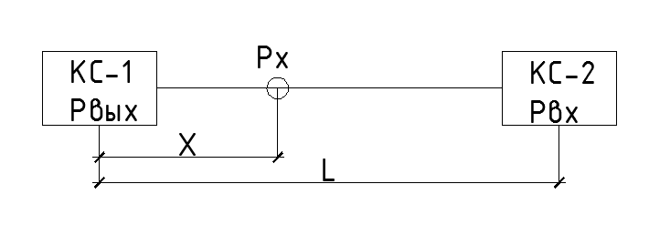

<h3>Давление газа в точке х</h3>

<form>
    <label>Давление газа на выходе из КС-1, МПа</label>
    <input class="w3-input w3-border" type="number" ng-model="p1" placeholder="давление1">
    <label>Давление газа на входе в КС-2, МПа</label>
    <input class="w3-input w3-border" type="number" ng-model="p2" placeholder="давление2">
    <label>Расстояние между КС-1 и КС-2, км</label>
    <input class="w3-input w3-border" type="number" ng-model="L" placeholder="расстояние1">
    <label>Расстояние от КС-1 до точки х, км</label>
    <input class="w3-input w3-border" type="number" ng-model="x" placeholder="расстояние2">
    <label>Точность вывода результатов (знаки после запятой)</label>
    <input class="w3-input w3-border" type="number" ng-model="tochnost" placeholder="точность">
</form>

<br>

<table class="w3-table w3-bordered w3-striped">
  <tr>
    <td>Давление газа в точке х, МПа</td>
    <td>{{ px }}</td>
  </tr>
</table>
